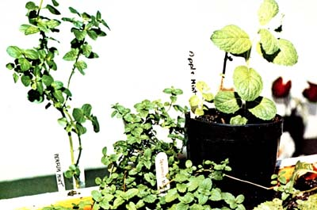

I'm convinced: Mint has got to be one of the most versatile herbs around. Indoors, you can use it to deodorize a room, wake up your skin, freshen your breath, create delicious hot (and cold) teas, lend zest to vegetable dishes, and spruce up otherwise-ordinary salads, juices, spreads, fruits, etc. And outdoors-in the vegetable garden-mint's highly aromatic foliage acts to repel ants, white cabbage moths, and other pests ... thereby ensuring healthy crops of cabbage, tomatoes, broccoli, and brussels sprouts.
No herb or vegetable garden should be without at least one of the 40 or so sweet-smelling members of the mint family (genus Mentha). These plants are simply too useful-and too easy to grow-to pass up!
If you live in the country, chances are good that you have mint on your property already. (if you don't, your neighbor probably does. Ask for a few plants or cuttings.)
Mint can also be purchased from most any plant shop, nursery, or mail-order herb outlet. (I've had particularly good luck with Well-Sweep Herb Farm, 317 Mt. Bethel Rd., Port Murray, N.J. 07865. Their service is fast and their prices-I think-quite reasonable. Send 25 cents for a catalog.)
When transplanting mint, dig the herb up carefully-so as not to make hash of its roots-and leave a little soil attached to the plant's base. (You won't have to dig very deeply, since mint grows close to the surface.)
Choose a spot in your garden that's partly shaded and moderately fertile . . . then put the plants in the ground about a foot apart, firm the soil around them to its original level, water thoroughly, and keep the area moist. (Mints generally prefer damp places and won't produce strongly scented leaves in dry soil.)
Soon, your transplants will begin to send out runners-or stolons -both under and over the surface of the ground, much like strawberries. And before you know it, the empty space between the parent plants will be filled by dozens of new herblets. (Don't be afraid to uproot stray stolons if the plants begin to get out of hand. When I was little, my mother used to yank the weedlike foliage out of the ground by the handful ... and the hardy herbs always grew back.)
To propagate mints from cuttings, all you have to do is [1] detach a three-inch-long piece of stem from a parent plant, [2] remove the leaves from the lowermost inch or so of the slip, and [3] place the scion in a glass of water on a window-sill. In about a week-when the cutting's roots are half an inch long-the young mint will be ready to go in the ground. (Plant it in the manner described above, to a depth of 1/2" above the tops of its roots.)
Even if you live in an apartment and don't have access to a plot of fertile ground, you can grow all the mint you'll ever need ... inside a box. (I've been growing mint this way since spring of last year, when I moved to sunny Fort Lauderdale, Florida.)
Your box can be any size and shape ... mine consists of some old boards nailed together haphazardly to make a container a foot wide, three feet long, and one and a quarter feet deep (although it really needn't have been more than six inches deep at the most).
On the advice of a nurserywoman, I lined my box with newspaper to discourage invading insects. (I used only the black-inked sections, however, since colored ink would-the woman assured me-poison the soil.)
Because I knew (from harsh experience) that my mint planter would be too heavy to move after it was filled with soil, I set the empty 1' X 1-1/4' X 3' container in its permanent location (by my front door, in a spot where it'd be shaded most of the day) first . . . then I [1] loaded it with sludge-rich soil, [2] covered the surface of the dirt with a few handfuls of well-composted cow manure (which I bought in 50-pound bags at the local nursery), [3] worked the manure in to a depth of three inches, and [4] planted a variety of mints: spearmint ( Mentha spicata ), for its familiar flavor . . . applemint (M. rotundifolia), for its novel aroma and fuzzy leaves . . . and perfum mint (M. aquatica), because it sounded exotic. (I later added a fourth variety: peppermint, M. piperita.)
I'm happy to say that all of my mints "took" and-as a result-began sending stolons out all over the place. And so far-whether because of the newspaper lining or the plants' own volatile oils-no bugs have bothered the containerized garden.
You can pluck leaves and sprigs directly from the tops of your plants as you need them ... or you can make a larger harvest up to three times per year. (In general, a complete harvest is called for whenever flower stalks begin to appear on the stems, since mint loses its potency soon after it blooms.)
To make one of the "big" harvests, simply cut off all the stems and visible stolons at the base of each plant, tie them together into a bunch, and hang the bundle of foliage in a dry, shady, well-ventilated place. When the leaves are dry take them down, and chop'em up if you like, and store them in airtight containers.
MINT SPLASH. Steep a handful of fresh mint leaves (peppermint is especially good) in a pint of hot water for about ten minutes ... then strain through a sieve, let cool, and chill. When you need a lift, sprinkle yourself with this solution. You'll perk up! (The liquid is usable for several days.)
MINT RINSE. Prepare mint-water as above and add it to your bath water for a tingly wash, or use the solution as a final rinse after shampooing. It's also good as a mouthwash, an after-shave lotion, and a soak for tired feet.
BREATH PURIFIER. Simply chew a sprig of your favorite mint.
TEA. Steep 1-1/2 teaspoons of dried (or 3 teaspoons of fresh) chopped mint leaves in a cup of hot water. Sweeten to taste with honey, then sip slowly, breathing in the fragrance. (Think of green fields warmed by the summer sun.) For iced tea, simply serve hot mint tea "on the rocks".
MINTED VEGETABLES. During the last two minutes of cooking, add two tablespoons of fresh chopped mint (or one tablespoon of dried chopped mint) to each quart of peas, green beans, carrots, or cauliflower.
ZESTY SALAD. Toss together two cups of lettuce, two cups of lamb's-quarters (the herb, not the animal), two or three scallions (green leaves and all), a couple of sprigs of fresh marjoram or lemon thyme (chopped), and three tablespoons of fresh, chopped mint (more if you want, but be careful not to overpower the salad with mintiness). Serve with your favorite oil-and-vinegar dressing. (Yield: 4 servings.)
MINT-CHEESE SPREAD. Add a few minced mint leaves to cream or cottage cheese, mix well, and spread on wholegrain crackers or rounds.
MINTED FRUITS. Add chopped mint to applesauce, baked apples, or fruit compotes. (For a morning eye-opener, blend chopped mint with orange juice.)
Finally, you might want to try what I call "mint sniff'. Bruise a mint leaf, raise it to your nose, and inhale. Do this whenever you've forgotten the beauty in the world ... and-believe me-you'll remember.
|
 |
|
|